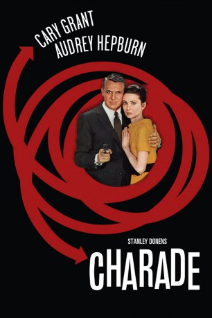
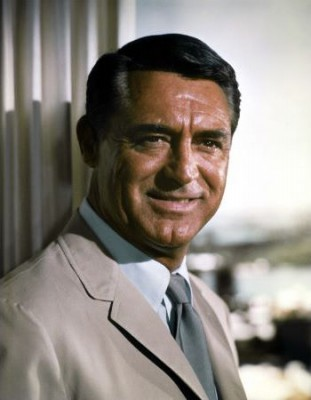
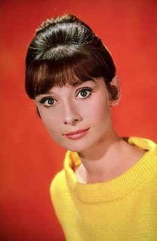
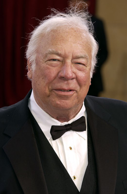
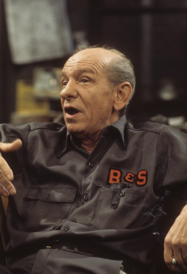

#3287 Charade
Auszeichnungen: für 1 Oscars nominiert 1 BAFTA-Awards gewonnen
 
 IMDB-Wertung: 8.0 / 10
IMDB-Wertung: 8.0 / 10  Metascore: 0
Metascore: 0 
Die US-Amerikanerin Regina Lampert beschließt in ihrem Skiurlaub, sich von ihrem Mann Charles, einem Schweizer, zu trennen. Als Regina Lampert in ihre Wohnung in Paris zurückkehrt, ist diese völlig leergeräumt. Die französische Polizei teilt ihr mit, dass ihr Mann auf seiner augenscheinlichen Flucht getötet wurde, und übergibt ihr eine Tasche mit einigen wenigen Habseligkeiten, die bei dem Toten sichergestellt wurde, darunter ein Notizbuch, mehrere Pässe und ein frankierter Brief an seine Frau. In der Folge wird Regina in eine undurchsichtige Kriminalgeschichte verwickelt, die sich um eine Episode aus dem Zweiten Weltkrieg dreht ....
Jahr: 1963
Dauer: 113 Minuten
FSK: 12
Land: USA Studio: A Universal ReleaseTonspuren:
Untertitel: Deutsch,
Auflösung: 1080p (1920x1040) Größe: 10956 MB
Genre: Thriller, Komödie, Liebe, Mystery
Regisseur: Stanley Donen
Drehbuch: Peter Stone, Peter Stone, Marc Behm
Soundtrack: Henry Mancini
Darsteller:
-  Cary Grant als Peter Joshua
-  Audrey Hepburn als Regina Lampert
 Walter Matthau als Hamilton Bartholomew
Walter Matthau als Hamilton Bartholomew James Coburn als Tex Panthollow
James Coburn als Tex Panthollow-  George Kennedy als Herman Scobie
-  Ned Glass als Leopold W. Gideon
 Mel Ferrer als Man smoking cigarette in nightclub , uncredited
Mel Ferrer als Man smoking cigarette in nightclub , uncredited- Chantal Goya als Extra , uncredited
- Dominique Minot als Sylvie Gaudet
 Jacques Marin als Insp. Edouard Grandpierre
Jacques Marin als Insp. Edouard Grandpierre- Paul Bonifas als Mr. Felix
- Thomas Chelimsky als Jean-Louis Gaudet
- Marc Arian als Subway Passenger , uncredited
- Claudine Berg als Maid , uncredited
- Marcel Bernier als Taxi Driver , uncredited
- Georges Billy als Man in Stamp Market , uncredited
- Albert Daumergue als Man in Stamp Market , uncredited
- Raoul Delfosse als Taxi Driver , uncredited
- Lucien Desagneaux als Passer-by in the Public Garden , uncredited
- Stanley Donen als Man in Elevator , uncredited
- Colin Drake als Hamilton Bartholomew , uncredited
- Jean Gold als Man Who Writes in the Terrace of the Cafe , uncredited
- Clément Harari als German Tourist , uncredited
- Monte Landis als Master of Ceremonies at Les Black Sheep Club , uncredited
- Bernard Musson als Hotel Receptionnist , uncredited
- Antonio Passalia als Italian Representative in the URESCO , uncredited
- Jacques Préboist als Ice Cream Salesman , uncredited
- Peter Stone als Man in Elevator / Voice of Marine , uncredited
- Anthony Stuart als British Representative in the URESCO , uncredited
- Michel Thomass als Embassy Driver , uncredited
- André Tomasi als Subway Passenger , uncredited
- Roger Trapp als Mortuary Employee , uncredited
- Louis Viret als Hallmark Employee in the Subway , uncredited
Datei: X:\1963\Charade (1963, FSK12, 1920x1040).mkv seit 03.03.2016
Festplatte: HD 1900-1970
 Es gibt insgesamt 23 Filme in der Gruppe '1963'
Es gibt insgesamt 23 Filme in der Gruppe '1963'